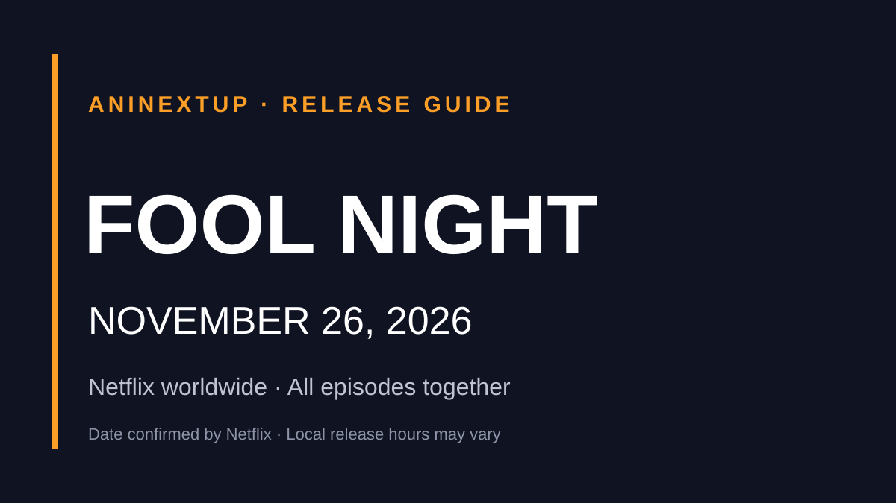

Anime News.
Official announcements, first trailers, release dates and streaming updates — all in one place.

Nue's Exorcist Anime Confirmed for Summer 2027
First teaser, confirmed voice cast and Studio Hibari production details.
READ THE STORY →Latest AniNextUp Guides
Our newest release-date and streaming coverage, based on confirmed information available to AniNextUp.

Le Collège Noir Season 2 Trailer Revealed Ahead of October 31 Premiere
Official final trailer, October 31 French premiere, six episodes and confirmed streaming regions.
READ UPDATE →
In a World Full of Zombies Anime: January 2027 Premiere, Trailer, Cast and Music
Official January 2027 anime announcement with the new trailer, cast, theme songs and broadcast details.
READ UPDATE →
The Guy She Was Interested In Wasn't a Guy at All Anime: January 8, 2027 Premiere and Trailer
The Guy She Was Interested In Wasn't a Guy at All premieres January 8, 2027. Watch the official trailer and see cast, studio and streaming details.
READ UPDATE →
Paw & Palaces Releases Creditless Ending Video Featuring Chill Choose!
Official Paw & Palaces creditless ending video and verified Riko Azuna song credits.
READ UPDATE →
d Anime Store Announces 81 Anime Titles for Fall 2026 in Japan
Japan’s d Anime Store confirms 81 fall 2026 anime titles, including exclusives and early streaming arrangements.
READ UPDATE →
BLEACH × Graniph: 17-Item Collection Launches in Japan on October 20
BLEACH: Thousand-Year Blood War and Graniph release 17 Shikai-inspired items in Japan on October 20, 2026. See preorder dates, prices and purchase limits.
READ UPDATE →
Yumeneko Connect Anime Announced: Cast, Studio and Teaser
Yumeneko Connect is getting a TV anime from STUDIO MASSKET. The official teaser, lead cast and staff are confirmed; no premiere date has been announced.
READ UPDATE →
Inherit the Winds Anime: January 2027 Premiere, November Theater Preview and New Visual
Inherit the Winds premieres in January 2027. Official October 13 visual, November 13 theatrical preview, cast, staff and broadcast details.
READ UPDATE →
The Boxer Anime Announced: Trailer, Cast, Staff and Release Date Status
The Boxer manhwa is getting a TV anime. See the confirmed cast, production studios, official teaser and why the release date is still TBA.
READ UPDATE →
The Fable Season 2 Confirmed for January 2027
Japanese broadcast confirmed for January 2027; exact date and international streaming pending.
READ UPDATE →
Gundam SEED FREEDOM ZERO: January 2027 Release Date, Trailer and Cast
Gundam SEED FREEDOM ZERO opens in Japan January 15, 2027 and North America in February. Official trailer, plot, Japanese and English cast.
READ UPDATE →
Ghost of Tsushima: Legends Anime Delayed to 2028: New Cast, Staff and Streaming Details
Ghost of Tsushima: Legends anime moves from 2027 to 2028. Find confirmed cast, studio, Crunchyroll streaming plans and the official teaser.
READ UPDATE →Kagurabachi Episodes 1–2 to Premiere March 25, 2027: World Tour Finale Details
Kagurabachi will premiere episodes 1 and 2 in Tokyo on March 25, 2027. See Singapore, Seoul and Brazil screenings, April broadcast and official trailer.
READ UPDATE →
SSS-Class Revival Hunter Anime: January 2027 Premiere, New Trailer, Cast and Crunchyroll
SSS-Class Revival Hunter premieres January 2027. The second official trailer reveals eight more cast members and an ending theme collaboration. Here is what is confirmed.
READ UPDATE →
One-Punch Man Season 3 Part 2: January 2027 Release, New Trailer and JAM Project Opening
One-Punch Man Season 3 Part 2 premieres January 2027. Watch the official trailer, see the new key visual and learn about JAM Project's opening theme.
READ UPDATE →
Noa Is My Senior, and My Friend Anime: 2027 Release, Main Cast and First Visual
Noa Is My Senior, and My Friend will premiere in 2027. Rina Kawaguchi and Tomoya Ito lead the cast of feel.'s office comedy adaptation.
READ UPDATE →
Naruto: Shadow Rising — Kishimoto's New Manga Announced, Official Teaser and Release Updates
Naruto: Shadow Rising is a new Naruto manga drawn by Masashi Kishimoto. See the official teaser, announcement artwork and what is confirmed about its release.
READ UPDATE →
Dr. STONE TERRAFORMING Anime Announced: Official Artwork, Trailer and Release Status
Dr. STONE TERRAFORMING will adapt the manga's Volume 27 epilogue. See the October 2026 official announcement, Senku illustration, teaser and unconfirmed release details.
READ UPDATE →
Nue's Exorcist Anime Confirmed for Summer 2027: Trailer, Cast and Studio
Nue's Exorcist is getting a TV anime in summer 2027. See the confirmed studio, staff, voice cast, teaser and what remains unannounced.
READ UPDATE →
Naruto × Ninkū Anime: Four Episodes, Official Teaser and Release Status
Naruto × Ninkū is a four-episode crossover supervised by both creators. Explore its story, staff and official teaser, with release and streaming status.
READ UPDATE →
Sasaki and Peeps Season 2 Anime Shares Creditless Opening and Ending Videos
Sasaki and Peeps Season 2 has released creditless opening and ending videos, featuring MADKID's Unbroken and nonfic!'s Sukipi no Okage!.
READ UPDATE →
Pokémon Horizons Anime Unseals Treasures of Ruin in Latest Wonder Voyage Arc Trailer
A new Pokémon Horizons: Wonder Voyage trailer highlights the Treasures of Ruin—Wo-Chien, Chien-Pao, Ting-Lu and Chi-Yu—as the anime's Paldea storyline continues.
READ UPDATE →
Live-Action Firefly Wedding TV Drama Announced for 2027
Firefly Wedding, the historical romance manga by Oreco Tachibana, will receive a live-action Fuji TV drama in Japan in 2027; casting and a precise premiere date remain unannounced.
READ UPDATE →
Anime Releasing in November 2026: Dates & Where to Watch
Confirmed November 2026 anime premieres, streaming releases and theatrical dates.
READ UPDATE →
Anime Releasing in December 2026: Confirmed Dates
Confirmed December 2026 anime releases and where to watch them.
READ UPDATE →
The Moon on a Rainy Night Anime — 2027
2027 TV anime confirmed with first official PV, Iori Saeki and Sora Amamiya leading the cast, and CompTown producing.
READ UPDATE →
Ascendance of a Bookworm Part 4 Anime Announced
The Royal Academy arc is officially getting a TV anime, with WIT Studio returning; release date and streaming remain TBA.
READ UPDATE →
Cosmoship Yamato √2199 Anime Film Announced
Hideaki Anno and Yutaka Izubuchi direct the new theatrical Yamato feature from Production I.G × Khara; release timing remains TBA.
READ UPDATE →
The Fledgling Demon Lord's Starter Shop — January 2027
January 2027 TV anime confirmed with a new key visual, second teaser PV, Yōhei Azakami as Ash and project No.9.
READ UPDATE →
The Otome Heroine's Fight for Survival — July 2027
July 2027 TV anime confirmed with teaser PV, Fuka Izumi as Alia and STUDIO CLUTCH × Animation Studio Seven.
READ UPDATE →The Record of a Fallen Vampire Anime Announced for 2027
2027 TV anime confirmed with teaser PV, lead cast, ZERO-G and Liber, and music by Evan Call.
READ UPDATE →
Red Riding Hood: A Detective Story — January 2027 & Crunchyroll
January 2027 premiere, new PV and key visual, additional cast and Crunchyroll streaming outside Asia.
READ UPDATE →
Manchuria Opium Squad Anime Announced
Anime adaptation confirmed October 5; release date, studio, cast and streaming remain TBA.
READ UPDATE →
Anime News: October 2026
Releases, sequels and streaming updates to keep on your radar.
READ UPDATE →
New Anime on Netflix in October 2026
Notable anime arriving on Netflix this month.
READ UPDATE →
Fall 2026 Anime Calendar
October premieres and where to watch them.
READ UPDATE →Next Confirmed Releases
Upcoming dated releases ordered chronologically instead of mixing future premieres with past announcements.

Dreamland
CrunchyrollREAD GUIDE →
Cyberpunk: Edgerunners 2
NetflixREAD GUIDE →My Happy Marriage Season 2 Special Episodes
NetflixREAD GUIDE →
Bass X Machina
NetflixREAD GUIDE →
Demon's Crest
Prime VideoREAD GUIDE →Rakuen Tsuihou: Kokoro no Resonance
Japanese TheatersREAD GUIDE →Armored Trooper VOTOMS: The Gray Witch Part 1
Japanese TheatersREAD GUIDE →
Witch on the Holy Night
Japanese TheatersREAD GUIDE →
Fool Night
NetflixREAD GUIDE →Follow the Fall 2026 Schedule
Use our seasonal and monthly hubs for a broader view of confirmed dates.
Browse News by Platform
Find the anime AniNextUp currently tracks for each major streaming service.
Confirmed information over rumor
AniNextUp focuses on actionable anime release information. Dates and streaming availability may change, so guides are updated when studios, distributors or official platforms provide new confirmed details.